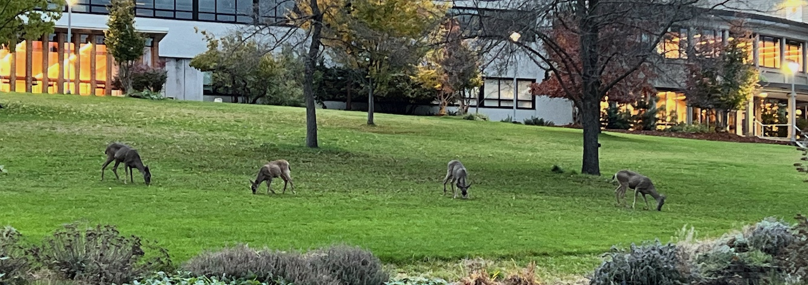

About
I am an Assistant Professor of computer science at Southern Oregon University in Ashland, Oregon. I collaborate with domain scientists investigating our world, using AI+machine learning techniques. Current projects include Aquillm, a RAG-AI to study tacit knowledge in research groups, funded by the Sloan Foundation and the NSF. Aquillm case studies include astronomy, environmental science, and computational acoustics. Related work includes GreenCrossingAI with environmental scientist Dr. Karen Mager, and the Astrophysics Data Lab at UCLA, with astrophysicist Dr. Tuan Do.
News
Selected Publications
Photometric Redshifts for Cosmology: Improving Accuracy and Uncertainty Estimates Using Bayesian Neural Networks
Evan Jones, Tuan Do, Bernie Boscoe, Jack Singal, Yujie Wan, Zooey Nguyen. The Astrophysical Journal, vol. 964, no. 2, IOP, 2024. doi:10.3847/1538-4357/ad2070. arXiv:2306.13179 [astro-ph.CO]
Navigating the Integration of Machine Learning into Domain Research
Bernie Boscoe, Tuan Do. US-RSE Conference, 2023. [Zenodo]
Elements of effective machine learning datasets in astronomy
Bernie Boscoe, Tuan Do, Evan Jones, Billy Li, Kevin Alfaro and Chris Ma. NeurIPS Machine Learning for the Physical Sciences Workshop, 2022. arXiv:2211.14401 [astro-ph.IM]
Recent Talks/Posters
- A Retrieval Augmented Generation Tool for Research Groups. Chandler Campbell, Bernie Boscoe, Tuan Do. Gateways 2024, Bozeman Montana
- Arrays from the sky: Astronomy and Data Science, Willamette University, Salem, Oregon, 2023
- Scaling Up: Incorporating HPC into undergraduate CS education courses using Gateways, Gateways 2023, Pittsburgh, PA
- To Have and Have Not: Addressing inequities for learners accessing computational science environments, International Conference on computational Science, London, UK, 2022
- Three workflow add-ons to improve machine learning reproducibility in astronomy, Astronomical Data Analysis Software and Systems (ADASS), Capetown South Africa, 2021
- From a Legacy System to an Open Source Library: What can we learn about sustaining software tools over decades? SIAM CSE21